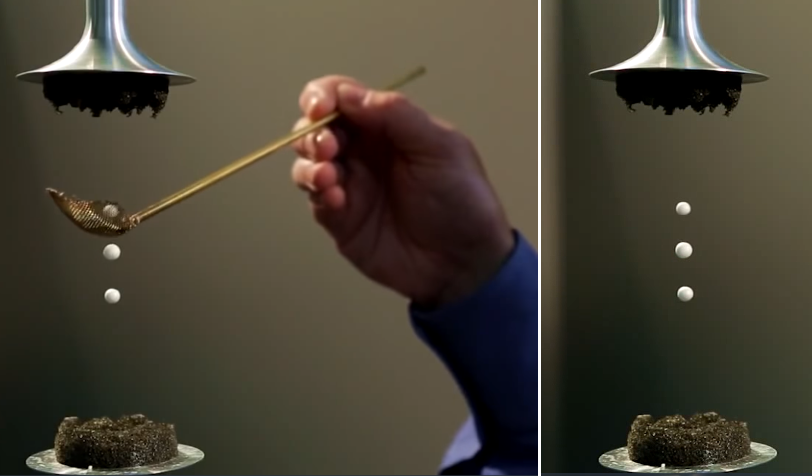
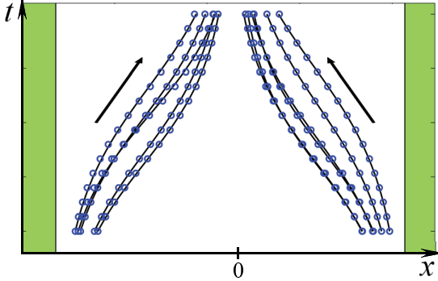

Y24 (2024) — English translation
Acoustic levitation is a phenomenon in which small bodies can levitate in a strong standing sound wave. Using acoustic levitation, you can create acoustic tweezers, which allow you to move small objects without contact and very accurately. Because of their properties, acoustic tweezers have found wide application, for example in biomedicine for manipulating structures at the cell scale. This problem examines the physics of acoustic levitation and its possible applications.
This problem examines the physics of acoustic levitation and its possible applications.
Let us consider a plane monochromatic longitudinal sound wave in an ideal gas propagating along the $x$ axis. The wave is given by the displacement $u(x,t)$ of the elements of the gaseous medium relative to the equilibrium position:\[u(x,t)=\operatorname{Re}\left(u_me^{i(\omega t-kx)}\right),\]where $u_m$ is the complex amplitude of the displacement, $\omega$ is the angular frequency of the wave, $k$ is the wave number, and $x$ – equilibrium coordinate of an element of the medium (the coordinate that this element of the gaseous medium would have in the equilibrium position). Let the equilibrium gas pressure be $p_0$ and the density $\rho_0$. The adiabatic exponent of the gas is $\gamma$. Then the deviation of pressure from the equilibrium value is given by the expression:\[\delta p(x,t)=p(x,t)-p_0=\operatorname{Re}\left(p_me^{i(\omega t-kx)}\right),\]where $p_m$ is the complex amplitude of pressure oscillations.
Let us now turn to the consideration of a monochromatic standing wave in a gas. We will similarly describe it through the displacement as\[u(x,t)=2u_m\cos(kx)\cos(\omega t).\]
When a particle of a substance is in an external standing sound wave, it is acted upon by an additional force called acoustic force. Deriving an expression for this force requires taking into account higher order corrections in the wave. When considering waves, two approaches are possible: the Euler approach and the Lagrange approach. In the Euler approach, the dependence of the wave parameters at a point with a fixed coordinate in space is analyzed, and in the Lagrange approach - at the point where a fixed element of the medium is located. In waves with small amplitude there is no difference between these approaches, but sometimes (for example, in this problem) it plays a role. For example, if it is necessary to find a correction to the pressure of a wave at a certain fixed point in space, it is necessary to take into account the displacement of particles of the substance at a given moment in time. All equations in the previous part were written from the point of view of the Lagrange approach, but the average pressure at a fixed point in space is obtained from the Euler approach. Consider the same standing wave as in Part A. Let us fix a point $x_0$ in space.
When considering waves, two approaches are possible: the Euler approach and the Lagrange approach. In the Euler approach, the dependence of the wave parameters at a point with a fixed coordinate in space is analyzed, and in the Lagrange approach - at the point where a fixed element of the medium is located. In waves with small amplitude there is no difference between these approaches, but sometimes (for example, in this problem) it plays a role. For example, if it is necessary to find a correction to the pressure of a wave at a certain fixed point in space, it is necessary to take into account the displacement of particles of the substance at a given moment in time.
All equations in the previous part were written from the point of view of the Lagrange approach, but the average pressure at a fixed point in space is obtained from the Euler approach. Consider the same standing wave as in Part A. Let us fix a point $x_0$ in space.
Let us now place a spherical particle in the wave. The particle is incompressible, its density is much greater than the density of the surrounding matter (i.e. it can be considered motionless), and its radius $a$ is much less than the characteristic wavelength. For now, we will assume that the presence of a particle does not affect the wave. The difference in average pressure at different points of a particle leads to the appearance of an average force acting on it.
If the acoustic force acting on a particle in a standing wave is greater than the force of gravity, then the particle will be able to levitate. In this part of the problem, we will try to evaluate under what conditions acoustic levitation can occur in a demonstration installation. Let us consider a standing wave, which is a superposition of two traveling plane waves propagating vertically. Mathematically, the wave is described in exactly the same way as in the previous parts.
The most popular demonstration of acoustic tweezers uses foam balls of density $\rho=50~кг/м^3$ with diameter $2a=1~см$. The sound has a frequency $f_0=10~кГц$. Air under normal conditions has a density $\rho_0=1.29~кг/м^3$ and a pressure $p_0=101~кПа$, its adiabatic index is $\gamma=1.4$.

Although in problems describing waves the amplitude of pressure or displacement of gas molecules is used, in everyday life the volume of sound is specified in decibels. In a monochromatic sound wave, the decibel is determined through the logarithm of intensity:\[D~[dB]=10\operatorname{log}_{10}\cfrac{\mathcal J}{\mathcal J_0},\]where $J_0=10^{-12}~Вт/м^2$ is the intensity of the sound wave with loudness $0~дБ$.
The derivation in Part A completely neglects the effect of viscosity, although in general it cannot be neglected. An honest conclusion about the contribution of viscosity would be too large within the scope of the problem, so let’s try to make an estimate. Directly at the surface of the particle, the macroscopic velocity of the gas must be zero. Moreover, far from the particle it depends on time as $v\cos(2\pi f_0t)$. It can be shown that the main change in velocity occurs in a thin region near the surface called the viscous boundary layer.
An honest conclusion about the contribution of viscosity would be too large within the scope of the problem, so let’s try to make an estimate. Directly at the surface of the particle, the macroscopic velocity of the gas must be zero. Moreover, far from the particle it depends on time as $v\cos(2\pi f_0t)$. It can be shown that the main change in velocity occurs in a thin region near the surface called the viscous boundary layer.
In fact, the viscosity correction must take into account that the material in the boundary layer is practically not entrained by the wave, which increases the effective mass of the particle when moving in the acoustic potential energy field.
The phenomena described in this problem are applicable not only to the creation of acoustic tweezers and interesting demonstrations. The action of acoustic force allows non-contact examination of acoustic resonators, which is especially important for resonators with a very high quality factor - they are too sensitive to direct intervention! The resonator is a narrow water-filled cell with a small thickness $w=380~мкм$, height $h=160~мкм$ and long length $l=40~мм$. Let's introduce the axis $x$ along the side $w$ with the origin in the middle of the resonator. A standing wave in such a resonator is excited along the $x$ axis. We will assume that only the fundamental mode of oscillations is excited. Typically, researchers are interested in what average energy density in the resonator they can obtain for a given voltage amplitude on the piezoelements that excite a standing wave. (A piezoelectric element is a special device that converts the voltage applied to it into a mechanical displacement.) In order not to interfere with the operation of the resonator directly, the researchers place glass balls of small radius $a=10~мкм$ into it and observe their displacement under the influence of acoustic force. This allows them to calculate the energy density of the sound waves inside. The characteristic time dependence of the position of the balls inside the resonator is shown in the figure below.
The phenomena described in this problem are applicable not only to the creation of acoustic tweezers and interesting demonstrations. The action of acoustic force allows non-contact examination of acoustic resonators, which is especially important for resonators with a very high quality factor - they are too sensitive to direct intervention! The resonator is a narrow water-filled cell with a small thickness $w=380~мкм$, a height $h=160~мкм$ and a long length $l=40~мм$. Let's introduce the axis $x$ along the side $w$ with the origin in the middle of the resonator. A standing wave in such a resonator is excited along the $x$ axis. We will assume that only the fundamental mode of oscillations is excited. Typically, researchers are interested in what average energy density in the resonator they can obtain for a given voltage amplitude on the piezoelements that excite a standing wave. (A piezoelectric element is a special device that converts the voltage applied to it into a mechanical displacement.) In order not to interfere with the operation of the resonator directly, the researchers place glass balls of small radius $a=10~мкм$ into it and observe their displacement under the influence of acoustic force. This allows them to calculate the energy density of the sound waves inside. The characteristic time dependence of the position of the balls inside the resonator is shown in the figure below.

For simplicity, we will assume that the assumptions about the high density and incompressibility of the balls are still satisfied (this is not entirely true, but qualitatively has little effect on the answer). Moreover, given the small size of the balls, they can be considered practically inertialess, i.e. we can assume that the acoustic force at any time is balanced by the force of viscous friction acting on the ball. This force is given by the Stokes formula $F_{сопр}=6\pi\eta av$, where $v$ is the speed of the ball, $\eta\approx0.9~мПа\cdot с$ is the viscosity of water. Thus, a ball placed at a point with coordinate $x_0$ will eventually move to the region of lowest potential energy.
The average energy density of a sound wave in the resonator theoretically depends on the voltage on the piezoelectric elements in a power-law manner $\mathcal W=A U_{pp}^2$, where $U_{pp}$ is the amplitude of the voltage on the piezoelements.
The speed of sound in water is $c=1.5~км/с$.
The table below shows the positions of the ball through $t_0=10~мин$ after being released at point $x_0=150~мкм$.
$U_{pp},~В$ $5$ $10$ $12$ $15$ $18$ $20$ $22$ $x,~мкм$ $144$ $124$ $110$ $74$ $54$ $34$ $18$
Source: https://pho.rs/p/3849